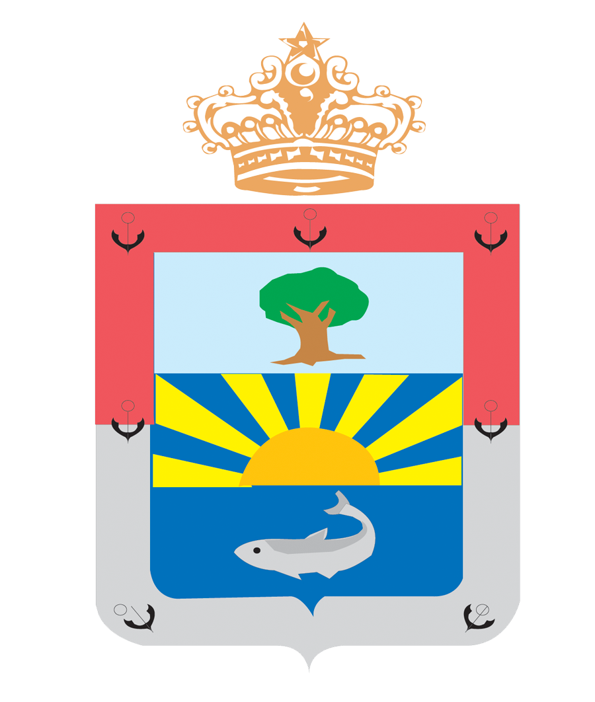

<mat-toolbar  class="header">
  <mat-toolbar-row>
    <a href="/projets">
        
    </a>
        <span class="example-spacer"></span>
        <!--
        <div class="dropdown" style="margin-right:50px;">
                <button class="btn btn-secondary dropdown-toggle" type="button" data-toggle="dropdown" aria-haspopup="true" aria-expanded="false">
                    <i class="fas fa-user big-icon"></i>
                </button>
                <div class="dropdown-menu" aria-labelledby="dropdownMenuButton">
                  <a class="dropdown-item" href="/projets">Profil personnel</a>
                  <a class="dropdown-item" href="/projets">Deconnexion</a>
                </div>
              </div>
              -->
      </mat-toolbar-row>
    </mat-toolbar>